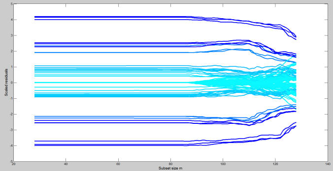
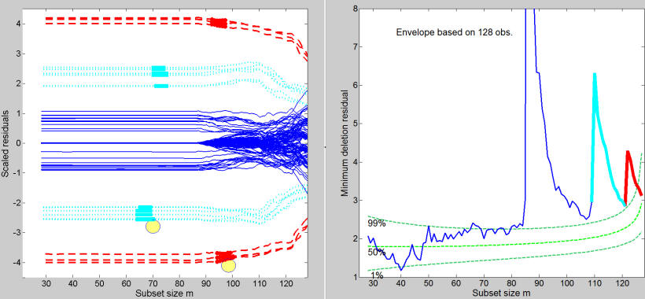
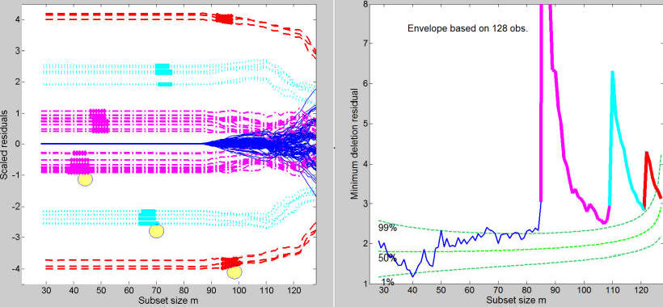
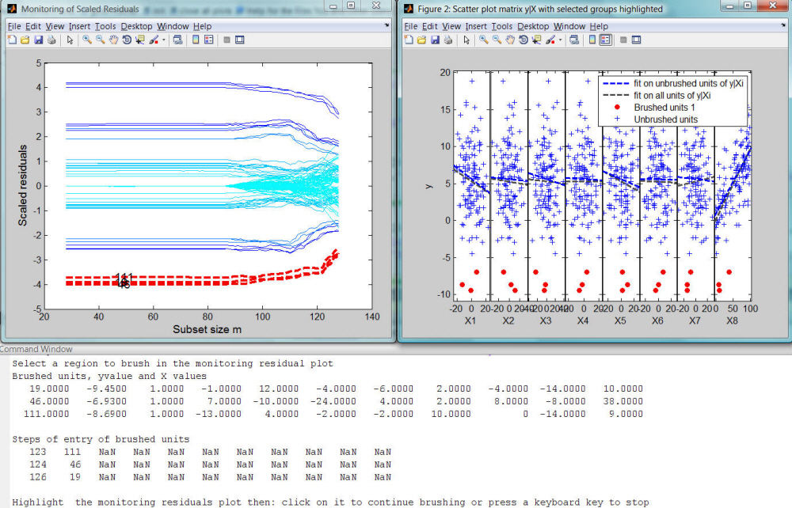

Dynamic Visualization in the Monitoring Residuals Plot
A monitoring residual plot is the plot which monitors all residuals at each step of the forward search. Large values of the residuals among cases not in the subset indicate the presence of outliers, as do non-smooth changes in the value of the residuals.
Suppose you want to analyze the Hawkins data.
% Load Hawkins data: 128 observations and 9 explanatory variables load hawkins; % Define y y=hawkins.data(:,9); % Define design matrix X X=hawkins.data(:,1:8); % Initial starting point based on Least Trimmed Squares [out]=LXS(y,X,'nsamp',10000); % Exploratory Forward Search [out]=FSReda(y,X,out.bs); % Monitoring residuals plot resfwdplot(out) % Monitoring minimum deletion residuals plot mdrplot(out,'ylimy',[1 8],'xlimx',[25 128])
The plot of minimum deletion residual among observations not in the subset, shows three clear peaks (see Figure below)

The monitoring of scaled residuals clearly shows that there is a lot of interchange in the order of magnitude of the residuals during the forward search.
resfwdplot(out)

These plots are static in the sense that do not enable for example to understand from which units the 3 peaks, which clearly appear in the minimum deletion residual plot, are formed. Similarly, it is not clear which trajectories of the residuals correspond to the three peaks. So far all this information had to be checked manually analyzing the units which entered the search. At present, thanks to the interactive connection which we have created among the different plots it is possible to select a set of trajectories in the monitoring residuals plot and at the same time to see them highlighted in the monitoring of the minimum deletion residual using the option databrush and sub option persist.
databrush=struct; databrush.selectionmode='Brush'; % Brush selection databrush.persist='on'; % Enable repeated mouse selections resfwdplot(out,'databrush',databrush);
For example, the Figure below shows that the most extreme (negative and positive) residuals enter the last 6 steps of the search and are associated with the final peak.

Similarly, if we do a second brushing, we can see that the set of trajectories selected in the left hand panel of Figure below correspond to units which enter consecutively and are associated with the second peak in the right panel of the Figure below.

The figure below shows the output of a third additional brushing which is connected with the first peak in the minimum deletion residual plot.
Every time a brushing action is performed on the monitoring residuals plot, it is possible to display in an automatic way also the information about the position of the brushed units in the scatter diagram of y against the required explanatory variable(s)
For example, the commands below
databrush=struct; databrush.bivarfit='2'; databrush.selectionmode='Brush'; % Brush selection databrush.persist='on'; % Enable repeated mouse selections resfwdplot(out,'databrush',databrush);once a set of trajectories in the monitoring residuals plot is brushed, enables the user to superimpose in the scatter plot matrix, which opens automatically, the projected regression line with and without the brushed units. Finally, in the command window, it is also possible to have the information about the units which are brushed and their order of entry into the forward procedure.
